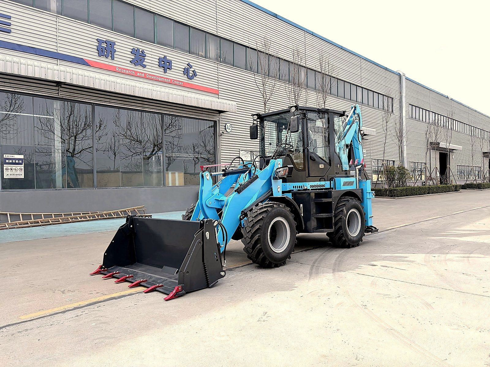

Fuel is the single biggest operating cost for any backhoe loader owner. Over a machine's lifetime, you'll spend more on diesel than on the machine itself. Yet most operators have no idea how much fuel their machine actually uses — or how to reduce it.
I track fuel consumption on every machine that leaves my factory. The data might surprise you.

Real-World Fuel Consumption by Model Size
Here's what I see in actual field data — not brochure numbers:
| Machine Size | Light Work (L/hr) | Moderate Work (L/hr) | Heavy Digging (L/hr) | Idling (L/hr) |
|---|---|---|---|---|
| Compact (BL 15-06, BL 20-07) | 2-3 | 3-5 | 5-6 | 1-1.5 |
| Mid-size (BL 35-12, BL 45-18) | 4-5 | 6-8 | 8-10 | 2-2.5 |
| Workhorse (BL 70-25 to BL 90-25) | 6-7 | 8-10 | 12-15 | 2.5-3 |
| Heavy duty (BL 105-25) | 7-9 | 10-12 | 15-18 | 3-3.5 |
These numbers assume properly maintained machines with good filters and correct tire pressure. A neglected machine can use 20-30% more fuel.
What Drives Fuel Consumption
1. Engine Load
The harder the engine works, the more fuel it burns. Digging in hard clay uses more fuel than loading loose sand. Lifting a full bucket uses more than an empty one. This sounds obvious, but many operators run the engine at full throttle for every task — even light loading that needs half the power.
2. Operating Technique
An experienced operator uses 15-20% less fuel than a novice. Smooth, planned movements save fuel. Jackrabbit starts, unnecessary reversing, and over-revving burn fuel for no productive output.
Training your operator is the cheapest fuel-saving investment you can make. A 3-day operator course pays for itself in fuel savings within the first month.
3. Machine Condition
A poorly maintained machine is a fuel hog. The biggest culprits:
- Clogged air filter: +10-15% fuel consumption
- Dirty fuel filter: +5-8%
- Low tire pressure: +5-10%
- Worn hydraulic pump: +8-12%
- Bad injectors: +15-25%
4. Work Site Conditions
Soft ground increases rolling resistance and fuel use. Steep slopes require more power. Hot weather reduces engine efficiency. Altitude above 1,500 meters reduces power output by 10-15%, requiring more throttle for the same work.
How to Measure Your Actual Fuel Consumption
Don't trust the fuel gauge — it's not accurate enough for measurement. Use this method:
- Fill the tank completely at the start of the day
- Record the hour meter reading
- Work a normal full day
- Refill the tank to the same level
- Note how many liters you put in
- Divide liters by hours worked
Do this for 3-5 days and average the results. That's your real consumption rate. Track it monthly — if it increases, something needs attention.
Example: You fill 60 liters after 8 hours of work = 7.5 L/hr. If this jumps to 9 L/hr next month with the same work, check your air filter, fuel filter, and tire pressure first.
10 Proven Ways to Cut Fuel Costs
- Shut down instead of idling: If you stop for more than 5 minutes, turn off the engine. Idling burns 2-3 L/hr for zero output.
- Match throttle to task: Light loading doesn't need full RPM. Reduce engine speed when the task allows.
- Service air filters weekly: In dusty conditions, clean or replace air filters every 50 hours. A clogged filter is the #1 fuel waster.
- Keep tires properly inflated: Check weekly. Under-inflation increases rolling resistance and fuel use.
- Plan your work cycle: Minimize travel between work zones. Batch similar tasks together.
- Use the right bucket: An oversized bucket forces the engine to work harder. Match bucket size to material density.
- Fix hydraulic leaks: Even small leaks waste hydraulic fluid and force the pump to work harder.
- Warm up properly: 2-3 minutes of warm-up, not 10. Extended warm-up wastes fuel and doesn't protect the engine better.
- Use quality fuel: Water-contaminated or low-grade diesel damages injectors and increases consumption.
- Train your operators: Smooth, efficient operating technique saves 15-20% on fuel.
Calculating Your Annual Fuel Cost
Let's say you run a BL 80-25 for 1,500 hours per year at an average of 8 L/hr:
- Annual fuel: 1,500 × 8 = 12,000 liters
- At $1.20/liter (varies by country): $14,400/year
- With 15% savings from better habits: $12,240/year
- Annual savings: $2,160
That's money straight to your bottom line — just from better fuel management.
Fuel Quality Matters
In many of my export markets (Africa, Southeast Asia, South America), fuel quality varies. Water in diesel is the most common problem. Always:
- Buy from busy, high-volume fuel stations (fuel sits for shorter periods)
- Use a water separator filter on your fuel system
- Drain the water separator weekly
- Keep the tank full to reduce condensation
- Never buy from unsealed drums or unlicensed sellers
For more on maintaining your fuel system, see my maintenance checklist.
Want to know the real fuel cost for your machine?
Tell me your model and expected working hours. I'll calculate your projected annual fuel cost and share specific tips for your work type.
Ask me on WhatsApp